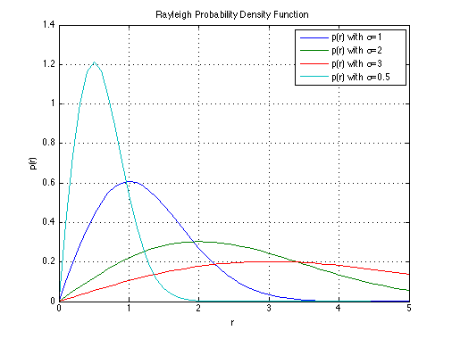

Rayleigh Probability Density Function
Copyright 2007 Telecommunications Lab
r = 0:0000.1:5; sigma = 1; p1 = (r/sigma.^2 ).* exp(-(r.^2/(2.*sigma.^2))); sigma = 2; p2 = (r/sigma.^2 ).* exp(-(r.^2/(2.*sigma.^2))); sigma = 3; p3 = (r/sigma.^2 ).* exp(-(r.^2/(2.*sigma.^2))); sigma = 0.5; p05 = (r/sigma.^2 ).* exp(-(r.^2/(2.*sigma.^2))); plot(r, p1, r, p2, r, p3, r, p05); title('Rayleigh Probability Density Function') xlabel('r') legend('p(r) with \sigma=1', 'p(r) with \sigma=2', 'p(r) with \sigma=3', 'p(r) with \sigma=0.5'); ylabel('p(r)') grid on;